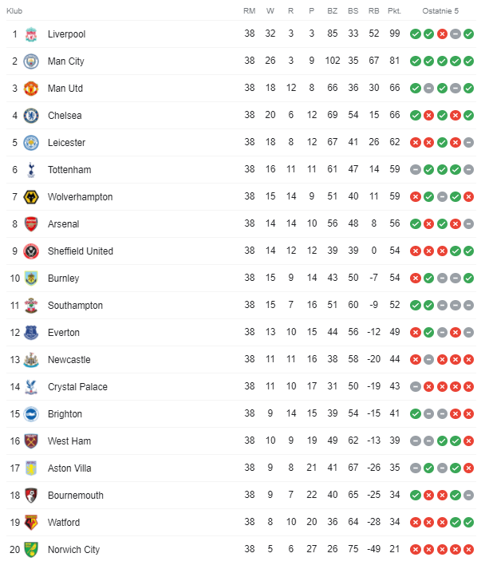

Sezon 2019/2020
Strona główna
1. Ranking najwięcej zdobytych mistrzostw Anglii
2. Najlepsi strzelcy w historii mistrzostw Anglii
3. Sezon 2019/2020
4. Sezon 2018/2019
5. Sezon 2017/2018
6. Sezon 2016/2017
7. Sezon 2015/2016
8. Sezon 2014/2015
9.Sezon 2013/2014
10.Sezon 2012/2013
Tabela sezonu 2019/2020
Najlepsi strzelcy
| Lp. | Zawodnik | Gole | Klub | Mecze | Wiek | Narodowość |
| 1. |  Jamie Vardy Jamie Vardy | 23 |  | 35 | 33 |  Anglia Anglia |
| 2. |  Pierre-Emerick Aubameyang Pierre-Emerick Aubameyang | 22 |  | 36 | 31 |  Gabon Gabon |
| 2. |  Danny Ings Danny Ings | 22 |  | 38 | 28 | Anglia |
| 4. |  Raheem Sterling Raheem Sterling | 20 |  | 33 | 25 | Anglia |
| 5. |  Mohammed Salah Mohammed Salah | 19 |  | 34 | 28 |  Egipt Egipt |
| 6. |  Sadio Mane Sadio Mane | 18 | | 35 | 28 |  Senegal Senegal |
| 6. |  Harry Kane Harry Kane | 18 |  | 29 | 26 | Anglia |
 Kevin De Bruyne
Kevin De Bruyne Belgia
Belgia Trent Alexander Arnold
Trent Alexander Arnold Andrew Robertson
Andrew Robertson Szkocja
Szkocja David Silva
David Silva Hiszpania
Hiszpania Son Heung-min
Son Heung-min Korea Południowa
Korea Południowa